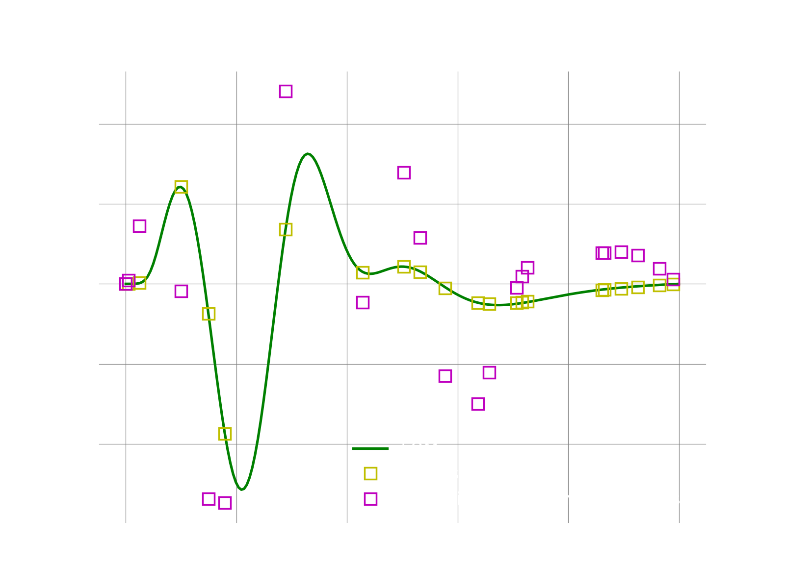

1D adv-diff: Comparing Masked POD Galerkin against masked POD LSPG
Overview
This is a follow up to the previous demo here We compare here maskdd Galerkin and masked LSPG.
Main function
The main function of the demo is the following:
if __name__ == "__main__": logger.initialize(logger.logto.terminal, "null") logger.setVerbosity([logger.loglevel.info]) # total number of grid points meshSize = 200 # create fom object fomObj = AdvDiff1d(nGrid=meshSize, adv_coef=1.0) # the final time to integrate to finalTime = .05 #--- 1. FOM ---# fomTimeStepSize = 1e-5 fomNumberOfSteps = int(finalTime/fomTimeStepSize) sampleEvery = 100 [fomFinalState, snapshots] = doFom(fomObj, fomTimeStepSize, fomNumberOfSteps, sampleEvery) #--- 2. POD ---# modes = computePodModes(snapshots) #--- 3. MASKED GALERKIN and LSPG ROM ---# # a masked problem is supposed to make it easier to emulate the # effect of hyper-reduction. To create a mask ROM problem, # we need to select and provide to pressio a set of indices # identifying a subset of the grid points in the full mesh. # This is a simple way to mimic hyper-reduction # without changing the FOM problem. In fact, the fom still # computes the full operators but we have an additional step # to "mask" the operators to compute the sample mesh version. # In this test, the meshSize = 200. Our sample mesh includes # the two end points since those contain the boundary conditions, # and 20 randomly selected grid points inside the domain. # So effectively we use 1/10 of the full mesh. random.seed(22123) sampleMeshSize = 20 sampleMeshIndices = random.sample(range(1, 199), sampleMeshSize) sampleMeshIndices = np.append(sampleMeshIndices, [0, 199]) # sort for convenience, not necessarily needed sampleMeshIndices = np.sort(sampleMeshIndices) romSize = 5 # number of modes to use romTimeStepSize = 1e-4 romNumberOfSteps = int(finalTime/romTimeStepSize) # run the masked galerkin problem [approximatedStateGal, romGal] = runMaskedGalerkin(fomObj, romTimeStepSize, romNumberOfSteps, modes[:,:romSize], sampleMeshIndices) # run the masked galerkin problem [approximatedStateLspg, romLspg] = runMaskedLspg(fomObj, romTimeStepSize, romNumberOfSteps, modes[:,:romSize], sampleMeshIndices) # compute l2-error between fom and approximate state fomNorm = linalg.norm(fomFinalState) err1 = linalg.norm(fomFinalState-approximatedStateGal) print("Galerkin: final state relative l2 error: {}".format(err1/fomNorm)) err2 = linalg.norm(fomFinalState-approximatedStateLspg) print("LSPG: final state relative l2 error: {}".format(err2/fomNorm))
1. Run FOM and collect snapshots
def doFom(fom, dt, nsteps, saveFreq): u = fom.u0.copy() U = [u] f = fom.createVelocity() for i in range(1,nsteps+1): # query rhs of discretized system fom.velocity(u, i*dt, f) # simple Euler forward u = u + dt*f if i % saveFreq == 0: U.append(u) Usolns = np.array(U) return [u, Usolns.T]
2. Compute POD modes
def computePodModes(snapshots): print("SVD on matrix: ", snapshots.shape) U,S,VT = np.linalg.svd(snapshots) return U
3. Create the sampling indices
# a masked problem is supposed to make it easier to emulate the # effect of hyper-reduction. To create a mask ROM problem, # we need to select and provide to pressio a set of indices # identifying a subset of the grid points in the full mesh. # This is a simple way to mimic hyper-reduction # without changing the FOM problem. In fact, the fom still # computes the full operators but we have an additional step # to "mask" the operators to compute the sample mesh version. # In this test, the meshSize = 200. Our sample mesh includes # the two end points since those contain the boundary conditions, # and 20 randomly selected grid points inside the domain. # So effectively we use 1/10 of the full mesh. random.seed(22123) sampleMeshSize = 20 sampleMeshIndices = random.sample(range(1, 199), sampleMeshSize) sampleMeshIndices = np.append(sampleMeshIndices, [0, 199]) # sort for convenience, not necessarily needed sampleMeshIndices = np.sort(sampleMeshIndices) romSize = 5 # number of modes to use romTimeStepSize = 1e-4 romNumberOfSteps = int(finalTime/romTimeStepSize)
4. The masker class
class MyMasker: def __init__(self, indices): self.rows_ = indices self.sampleMeshSize_ = len(indices) def createApplyMaskResult(self, operand): if (operand.ndim == 1): return np.zeros(self.sampleMeshSize_) else: return np.zeros((self.sampleMeshSize_, operand.shape[1])) def applyMask(self, operand, time, result): if (operand.ndim == 1): result[:] = np.take(operand, self.rows_) else: result[:] = np.take(operand, self.rows_, axis=0)
5. Masked Galerkin ROM
def runMaskedGalerkin(fomObj, dt, nsteps, modes, sampleMeshIndices): # find out number of modes wanted romSize = modes.shape[1] # fom reference state: here it is zero fomReferenceState = np.zeros(fomObj.nGrid) # create ROM state by projecting the fom initial condition fomInitialState = fomObj.u0.copy() romState = np.dot(modes.T, fomInitialState) ''' creating a masked Galerkin problem involves these steps: (1) creating the decoder on the FULL mesh (2) create a "projector operator" by filtering the rows of the POD modes only on the sample mesh (aka mask) indices. The projector is responsible to project the FOM velocity. Note that one can use other matrices for the projector but that will be shown in other demos. (3) create a masker object responsible to mask the FOM operators. (4) create the masked Galerkin problem ''' # 1. create a linear decoder linearDecoder = rom.Decoder(modes) # 2. create the projector # here, simply use "collocation" with the POD modes filtered on the "sample mesh" modesOnSampleMesh = np.take(modes, sampleMeshIndices, axis=0) projector = rom.galerkin.ArbitraryProjector(modesOnSampleMesh) # 3. create the masker object masker = MyMasker(sampleMeshIndices) # 4. create the masked galerkin problem with Euler forward problem = rom.galerkin.masked.ProblemBackwardEuler(fomObj, linearDecoder, romState, fomReferenceState, masker, projector) # linear and non linear solver lsO = MyLinSolver() nlsO = solvers.NewtonRaphson(problem, romState, lsO) nlsO.setMaxIterations(15) # solve the problem rom.galerkin.advanceNSteps(problem, romState, 0., dt, nsteps, nlsO) # after we are done, use the reconstructor object to reconstruct the fom state # NOTE: even though the Galerkin problem was run on the "masked mesh points", # this reconstruction uses the POD modes on the full mesh stored in the decoder # so we can effectively obtain an approximation of the full solution fomRecon = problem.fomStateReconstructor() return [fomRecon.evaluate(romState), romState]
6. Masked LSPG ROM
def runMaskedLspg(fomObj, dt, nsteps, modes, sampleMeshIndices): # find out number of modes wanted romSize = modes.shape[1] # fom reference state: here it is zero fomReferenceState = np.zeros(fomObj.nGrid) # create ROM state by projecting the fom initial condition fomInitialState = fomObj.u0.copy() romState = np.dot(modes.T, fomInitialState) ''' creating a masked LSPG problem involves these steps: (1) creating the decoder on the FULL mesh (2) create a masker object responsible to mask the FOM operators (3) create the masked LSPG problem ''' # 1. create a linear decoder linearDecoder = rom.Decoder(modes) # 2. create the masker object masker = MyMasker(sampleMeshIndices) # 3. create the masked galerkin problem with Euler forward problem = rom.lspg.unsteady.masked.ProblemEuler(fomObj, linearDecoder, romState, fomReferenceState, masker) # linear and non linear solver lsO = MyLinSolver() nlsO = solvers.GaussNewton(problem, romState, lsO) nlsO.setMaxIterations(10) # solve the problem rom.lspg.solveNSequentialMinimizations(problem, romState, 0., dt, nsteps, nlsO) # after we are done, use the reconstructor object to reconstruct the fom state # NOTE: even though the Galerkin problem was run on the "masked mesh points", # this reconstruction uses the POD modes on the full mesh stored in the decoder # so we can effectively obtain an approximation of the full solution fomRecon = problem.fomStateReconstructor() return [fomRecon.evaluate(romState), romState]
Results
If everything works fine, the following plots shows the result. We first plot the result reconstructed only on the sample mesh. This can easily be done using the bases collocated on the sample mesh indices.
We then plot the fom solution reconstructed using the bases on the full mesh. Note that all we need to change is just using the full bases. We see that for this toy example, even with just 10% of the grid, LSPG with 5 modes accuractely reproduces the FOM solution. While for Galerkin the solution is less accurate.